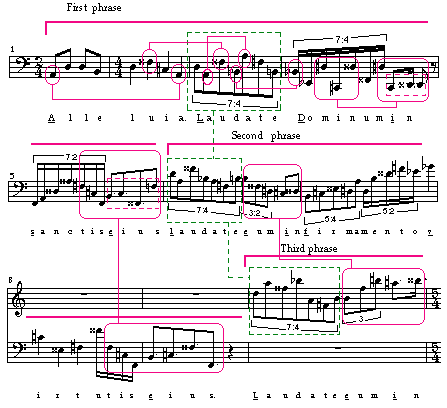

Even though this composition appears to be striving toward a more linear approach in the rhythmic and melodic aspects, this is balanced by recurrences inherent in the text. For example, the third part of the Latin text "Alleluia. Laudate Dominum in sanctis eius" of Psalm 150 occurs 10 times (not always in its original form). These variations supply a natural harmony among the music elements of melody and rhythm, presenting to the composer the path where the usage of a compositional device such as two-voice counterpoint, or dividing one voice into two or three separate voices, could be applied. It is this phrase element that gives prominence to the work and accomplishes the motivic relationship throughout this movement. It also could be exploited, for example, in expanding the piece by adding parts for conventional orchestra.
Example 4 illustrates some of the harmonic possibilities that can be achieved. Repeating notes, and primary and secondary phrases have been highlighted. These repeating patterns constitute aural focal points; therefore, one or more melodic parts could be created to support these points. And, since the existing melodic part is mostly polyrhythmic, the rhythmic values in the added parts should be kept simple and close to the time division in order to support and alleviate the tension from the subdivisions.
Example 4: Mm. 1-10 third movement.
This demonstrates the first, second, and the beginning of the third Latin text phrases. The underlined letters indicate the start of a word.
